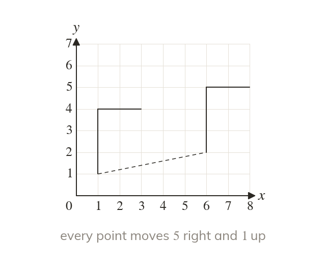
A translation slides a shape
A translation moves every point the same distance in the same direction. The image is congruent and faces the same way.
Every slide on a screen, from a game character to a scrolling map, is two numbers, across and up. Symmetry lets a designer finish a logo or a tile from half of it.
Work down the page at your own pace. Write every answer in your book first, then click to check it.
Read each card, then follow the worked examples one step at a time.

A translation moves every point the same distance in the same direction. The image is congruent and faces the same way.
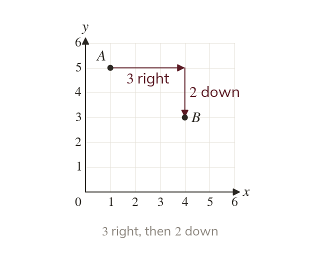
A column vector puts the move across on top, and up or down below. So means right and down.
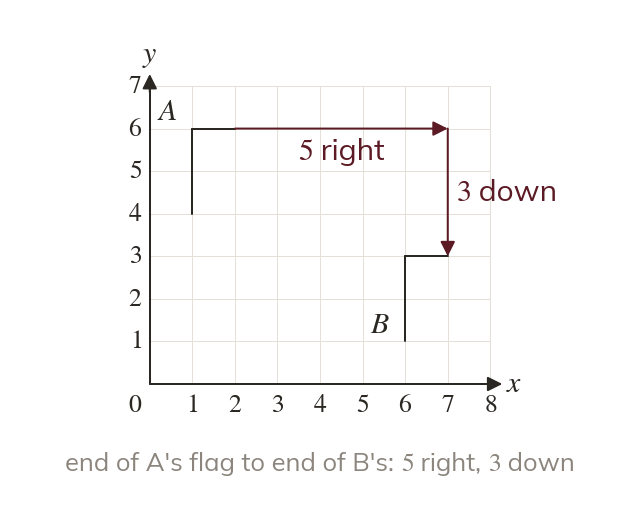
Read a vector from any point to its own image. Count across first, then up or down.
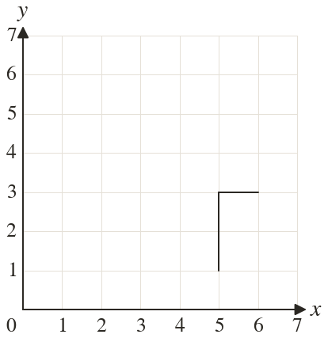
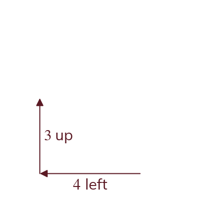
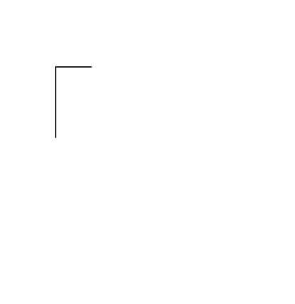
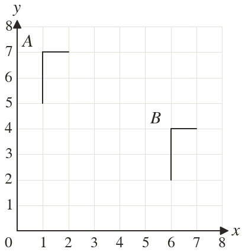
Pick an answer. If it's wrong, the feedback tells you which mistake it was.
Printable worksheet — the questions with room to work.
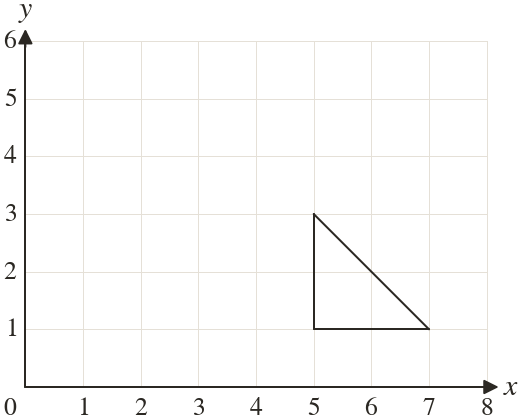
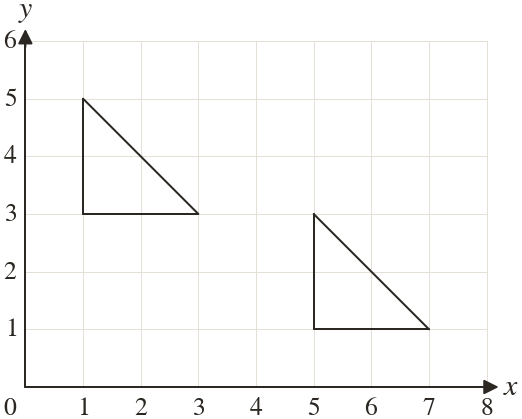
Read each card, then follow the worked examples one step at a time.

A line of symmetry reflects a shape exactly onto itself. A rectangle has two, through the middles of its sides.

The order counts the positions in one full turn where a shape looks the same. Every shape has order at least

Each missing corner is a reflection of a given one. It is as far from the line, on the other side.
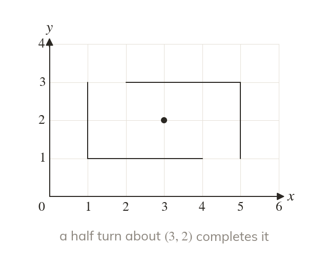
For order the missing part is a half turn of the given part. Each corner goes straight through the centre.
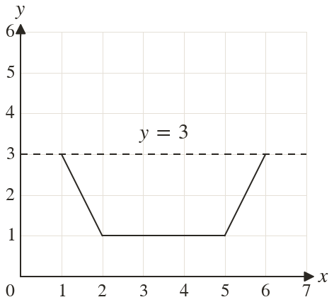
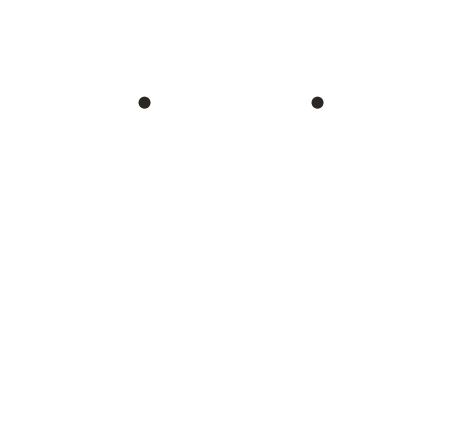
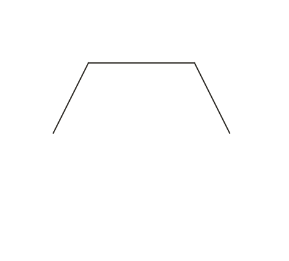


Pick an answer. If it's wrong, the feedback tells you which mistake it was.
Printable worksheet — the questions with room to work.


Finished? Next lesson: 10H.12.2 Reflections and Rotations.
For each skill, tap the one that is true for you today. Your Revise pages start with anything you mark Not yet.
Your ratings are saved on this device only.
Log in, then search for a code to practise that skill.
Videos, worksheets and more on each part of this lesson.